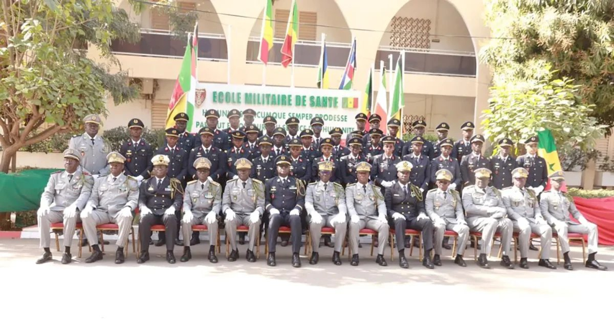
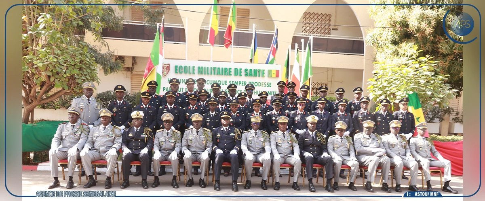

Dakar, depuis 1968École Militaire de Santé
Général Jean Alfred Diallo
Former ceux qui soignent ceux qui servent.
« Partout et toujours au service des Hommes »

Photographie officielle à intégrer : assets/images/hero.jpgUne double vocation
L'École Militaire de Santé forme les futurs officiers du Service de Santé des Armées dans un environnement où exigence académique, discipline militaire et engagement au service de la Nation sont indissociables.
Créée par décret le 28 août 1968, doyenne des écoles de formation d'officiers au Sénégal, elle prépare des médecins, pharmaciens, chirurgiens-dentistes et vétérinaires à servir partout où les forces armées sont engagées, et à appuyer les politiques publiques de santé, y compris dans les zones les plus enclavées du pays.
Les élèves sont à la fois étudiants de l'Université Cheikh Anta Diop de Dakar, à la Faculté de Médecine, de Pharmacie et d'Odontologie (FMPO) et à l'EIESMV, et élèves en formation militaire.

Photographie officielle à intégrer : assets/images/mission.jpgFormations
Quatre filières, au choix des élèves admis. Le cursus académique suit les mêmes examens et stages hospitaliers que ceux des étudiants civils.
Un parcours en sept étapes
De l'entrée à l'université à l'affectation, la formation académique et la formation militaire se déroulent en parallèle.
- Formation universitaire
- Formation militaire
- Stages
- Pratique clinique
- Thèse
- Formation d'application
- Service
Formation militaire
Formation initiale au combat au 12e Bataillon d'Instruction de Dakar-Bango. Brevets pendant les vacances universitaires : parachutiste, conduite militaire, nautique.
Stages
Stages militaro-médicaux en centre médical de garnison en 4e et 5e années.
Après la thèse
École d'Application du Service de Santé des Armées (EASSA) pendant 6 à 8 mois, puis affectation comme médecin-chef d'unité ou médecin traitant en hôpital militaire de niveau 1 ou 2.
Concours d'admission
Les dates de la prochaine session seront communiquées officiellement.
Institutions de rattachement
Ministère des Forces Armées
Tutelle. L'école relève de la Direction de la Santé des Armées.
FMPO, UCAD
Rattachement pédagogique pour la médecine, la pharmacie et l'odontologie.
EIESMV, UCAD
Rattachement pédagogique pour la médecine vétérinaire.